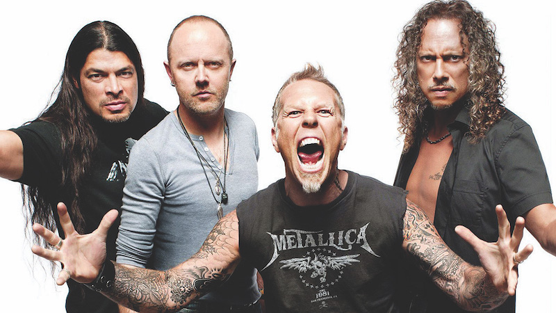

Metallica
Metallica is an American heavy metal band. The band was formed in 1981 in Los Angeles by vocalist and guitarist James Hetfield and drummer Lars Ulrich, and has been based in San Francisco for most of its career. The band's fast tempos, instrumentals and aggressive musicianship made them one of the founding "big four" bands of thrash metal, alongside Megadeth, Anthrax and Slayer.
Metallica's current lineup comprises founding members and primary songwriters Hetfield and Ulrich, longtime lead guitarist Kirk Hammett and bassist Robert Trujillo. Guitarist Dave Mustaine (who went on to form Megadeth after being fired from the band) and bassist RonMcGovney, Cliff Burton and Jason Newsted are former members of the band.
Metallica first found commercial success with the release of its third album, Master of Puppets (1986), cited as one of the heaviest metal albums and the band's best work. The band's next album, ...And Justice for All (1988), gave Metallica its first Grammy Award nomination. Metallica has released ten studio albums, four live albums, twelve video albums, a cover album, two extended plays, 37 singles and 39 music videos.
The band has won nine Grammy Awards from 23 nominations, and its last six studio albums (beginning with Metallica) have consecutively debuted at number one on the Billboard 200. Metallica ranks as one of the most commercially successful bands of all time, having sold over 125 million albums wordwide as of 2018.